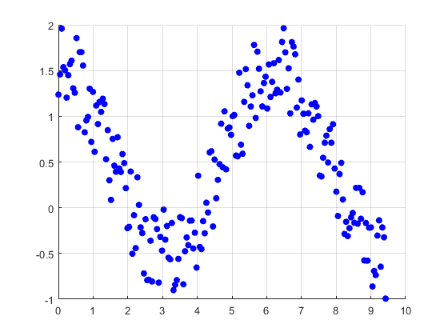

Introduction to MATLAB
The name MATLAB stands for MATrix LABoratory. MATLAB is a high-level programming language and interactive environment for numerical computation, visualization and programming. MATLAB is a modern programming language environment: it has sophisticated data structures, contains built-in editing and debugging tools, and supports object-oriented programming. It also allows matrix manipulations; plotting of functions and data; implementation of algorithms; creation of user interfaces; interfacing with programs written in other languages, including C, C++, Java, and FORTRAN; analyze data; develop algorithms; and create models and applications.
Contents
- MATLAB Environment
- Using MATLAB as a calculator
- Variable assignment
- Matrix Generation
- Common Array/Matrix Operations
- Initializing Variables
- Special Values
- Multidimensional Arrays
- Cell Arrays
- Structure Array
- Useful commands
- Data Files
- Plots
- Annotation
- Graph Management Functions:
- Plotting Family of Curves
- Plotting Multiple Functions on One Figure
- Other 2D plot Functions
- 3D Plot Functions
- Animations and Movies
- Saving the Video
- Symmbolic Toolbox
- Symbolic Differentiation and Integration
- Other Useful Symbolic Functions
- Symbolic Plot Functions (Easy Plot)
- References
MATLAB Environment
MATLAB development IDE can be launched from the icon created on the desktop. The main working window in MATLAB is called the desktop. When MATLAB is started, the desktop appears in its default layout
- Current Folder — Access your files.
- Command Window — Enter commands at the command line, indicated by the prompt (>>).
- Workspace — Explore data that you create or import from files.
- MATLAB Toolboxes: MATLAB’s add-on software tools are called toolboxes. They complement the core MATLAB library and provide application-specific functions and objects that accelerate the process of modeling and building algorithms and systems. These algorithmic building blocks enable the user to focus on their area of expertise instead of having to reinvent and implement the basics.
help
- Simulink: It provides an environment for multidomain simulation and model-based design for dynamic and embedded systems. It provides an interactive graphical environment and a customizable set of block libraries.With an easy-to-use graphical design environment, Simulink allows us to design, simulate, implement, and test a variety of timevarying systems, including communications, control, signal processing, and video processing.
simulink
- GUI: The graphical user interface development environment (GUIDE) enables the rapid creation of a graphical user interface (GUI) for a MATLAB program.
guide gui_example
Using MATLAB as a calculator
Type at the prompt command (>>)
clear all, clc
x=1+2*4;
- Hierarchy of arithmetic operations
- The contents of all parentheses, starting from the innermost parentheses and working outward.
- All exponentials, from left to right.
- All multiplications and divisions, from left to right
- All additions and subtractions, from left to right.
Example:
x=1/(2+3^2)+4/5*6/7;
Variable assignment
The equals sign is the MATLAB assignment statement. The command a=5 stores the value 5 in the variable named a. If the variable a has not already been created, this command will create it, then store the value. The class of the variable (its type) is determined by the value that is to be stored.
a=5; %class double name='Robert'; %class char isDone=true; %class logical
- Controling the appearance of floating point number The command format controls how the results of computations are displayed. 'format short' displays 4 decimals and 'format long' displays all 15 digitis in double precision.
format long
x
x = 0.776623376623377

- Large and small numbers
x=6.2e23; y=-1.6e-20;
- Complex numbers
z1=5.2+2.3i; z2=4.3-8.1j;
Matrix Generation
Matrices are the basic elements of the MATLAB environment. A matrix is a two-dimensional array consisting of m rows and n columns.
- Row vector
v=[1 4 6 7 8];
- Column vector
w=[1;4;6;7;8];
- Transpose
w=v';
- To access blocks of elements (Subarrays)
v(1:3); v(3:end);
- Matrix
A=[1 2 3; 4 5 6; 7,8,9]; A(2,1); A(:);
- Colon operator
x=0:0.1:1;
linspace(0,1,11); % Linear spacing linspace(a,b,n) inclusing a and b
- Colon operator in a matrix
A(1:2,2:3); A(2,:);
- Null vector (Deleting values)
A(:,2)=[];
- Creating a sub-matrix
B=A([2 3],[1 2]);
Common Array/Matrix Operations
MATLAB supports two types of operations between arrays, known as array operations and matrix operations. Array operations are operations performed between arrays on an element-by-element basis. In contrast, matrix operations follow the normal rules of linear algebra, such as matrix multiplication.

Solving Linear Equations (Example)
One of the problems encountered most frequently in scientific computation is the solution of systems of simultaneous linear equations. With matrix notation, a system of simultaneous linear equations can be written as
- Example: consider the following system of linear equations

- Two ways to solve for x:
- x=inv(A)*b
- x=A\b % left division
Initializing Variables
Array can be initialized using built-in Matlab functions

- Special Matrix Generators:
- rand(m,n), randn(m,n), randi(imax,sz1,...,szN,classname)
- magic(m)
- diag(A)
randi(10,2,1) randn(2,3) magic(3)
ans =
10
10
ans =
-0.229626450963180 -0.444627816446985 0.276068253931536
-1.506159703979719 -0.155941035724769 -0.261163645776479
ans =
8 1 6
3 5 7
4 9 2
Special Values
MATLAB includes a number of predefined special values.

Multidimensional Arrays
MATLAB allows us to create arrays with as many dimensions as necessary for any given problem.

A=randn(2,3);
B=randn(2,3);
C(:,:,1)=A;
C(:,:,2)=B;
whos C
Name Size Bytes Class Attributes C 2x3x2 96 double
Cell Arrays
- A cell array is a special MATLAB array whose elements are cells, containers that can hold other MATLAB arrays.
- A cell array is a special MATLAB array whose elements are cells, containers that can hold other MATLAB arrays.
- In programming terms, each element of a cell array is a pointer to another data structure, and those data structures can be of different types.
- Cell arrays provide a great way to collect information about a problem, because all of the information can be kept together and accessed by a single name.
- Cell arrays use braces “{}” instead of parentheses “()” for selecting and displaying the contents of cells.

my_cell{1,1}=magic(4);
my_cell{1,2}='Hello';
my_cell
celldisp(my_cell)
my_cell =
[4x4 double] 'Hello'
my_cell{1} =
16 2 3 13
5 11 10 8
9 7 6 12
4 14 15 1
my_cell{2} =
Hello
- Indexing Cells
my_cell{1,1}(2,3)
ans =
10
- Deleting Cells in Arrays
my_cell{1}=[]
my_cell =
[] 'Hello'
Structure Array
An array is a data type in which there is a name for the whole data structure, but individual elements within the array are known only by number. A cell array is a data type in which there is a name for the whole data structure, but individual elements within the array are known only by number. However, the individual elements in the cell array may be of different types. In contrast, a structure is a data type in which each individual element has a name. The individual elements of a structure are known as fields, and each field in a structure may have a different type. The individual fields are addressed by combining the name of the structure with the name of the field, separated by a period.
- Creating Structure Array
- A field at a time, using assignment statements
- All at once, using the struct function
student.name='John'; student.add='12 Main street'; student.height=180; student.GPA='A'; student
student =
name: 'John'
add: '12 Main street'
height: 180
GPA: 'A'
A second student can be added to the structure by adding a subscript to the structure name (before the period).
student(2).name='Jane';
student(2).height=170;
student
student =
1x2 struct array with fields:
name
add
height
GPA
- Nesting Structure Arrays Each field of a structure array can be of any data type, including a cell array or a structure array. For example, the following statements define a new structure array as a field under array student to carry information about each class that the student is enrolled in.
student(1).class(1).name='Math'; student(1).class(1).instructor='Mr. Jones'; student(1).class(2).name='Physic'; student(1) student(1).class(2)
ans =
name: 'John'
add: '12 Main street'
height: 180
GPA: 'A'
class: [1x2 struct]
ans =
name: 'Physic'
instructor: []
Average Height (Example)
height_array=[]; for ii=1:length(student) height_array=[height_array, student(ii).height]; end average=mean(height_array)
average = 175
- The struct function allows you to preallocate a structure or an array of structures.
Create a nonscalar structure with one field.
field = 'f'; value = {'some text'; [10, 20, 30]; rand(2)}; s = struct(field,value) s.f
s =
3x1 struct array with fields:
f
ans =
some text
ans =
10 20 30
ans =
0.928854139478045 0.488608973803579
0.730330862855453 0.578525061023439
Useful commands
- clear a v g : clears the variables,a, v, g, from the workspace
- clear : clears all variables from the workspace
- who : lists the currently defined variables
- save myfile : saves the current workspace to the file called myfile.mat
- load myfile : loads variables saved in myfile.mat into the current workspace
- clc : To clear the Command Window
- ctrl-c : To abort a MATLAB computation
- ... : To continue a line
- help (command): To get information about any command
- lookfor (command): To find a list of the functions of interest
Example: lookfor inverse
Data Files
- Save commands: save filename var1 var2 var3
data must be shared with other programs, then the -ascii option should be specified, and the data values will be written to the file as ASCII character strings separated by spaces.
% define an array x x=magic(4); save('mydata.txt','x','-ascii') % can be read by spreadsheets or by programs written in other languages
- Load commands: load filename
- textread function: [A,B,C,...]=textread(filename, format)
%The textread function reads ASCII files that are formatted into columns of data where each column can be of a different type, and stores the contents of each column in a separate output array.
[first, last, blood, gpa, age, answer]=textread('test_data.txt','%s %s %s %f %d %s'); first
first =
'James'
'Sally'
- input command for acquiring the filename
filename=input('Enter save file name: ', 's'); save (filename, '-mat');
- other useful I/O-functions

Plots
MATLAB’s extensive, device-independent plotting capabilities are among its most powerful features. They make it very easy to plot any data at any time. To plot a data set, just create two vectors containing the x and y values to be plotted and use the plot function.
- plot(X1,Y1,LineSpec1,...,Xn,Yn,LineSpecn)
x1 = linspace(-2*pi,2*pi);
y1 = sin(x1).^2-.5;
y2 = cos(x1);
% close all, plot(x1,y1,'g', x1,y2,'b--o');

Example : ploy the following function for the values of x between -10 and 10
plot(x,y);
Annotation

axis([-10 10 0 inf])
box on/off
axis on/off
grid on
xlabel('x'), ylabel('y')
xlim([-5 5])
text(-6,0.4e4,'\leftarrow y=x^4-10x^3-5x','Color','red','FontSize',10)
legend( 'Practice Plot','Location','northwest')
Graph Management Functions:
- figure(n)
- hold on: to draw more than one curve, surface, or line (or combination of these) on a given graph
- subplot(i,j,k): The first two arguments divide the window into sectors (rows and columns), and the third argument indicates in which sector a graph is to be placed.

- Save graphics : MATLAB provides the means to convert a figure to a format compatible with many common print devices.
print('-deps2', 'c:/path/FileName.eps')

Example: Draw a circle of radius r=0.5 whose center is located at (a,b)=(1,2)
clear all,close all theta=linspace(0, 2*pi, 50); % 1x50 figure, subplot(1,2,1) plot(1+0.5*cos(theta), 2+0.5*sin(theta)) axis equal rad=0.5:0.25: 1.75; %1x6 x_r=1+cos(theta')*rad; %50*6 y_r=2+sin(theta')*rad; %50*6 subplot(1,2,2) plot(x_r,y_r,'b', 1,2,'k+') axis equal
Plotting Family of Curves
In general, MATLAB allows one to have the x-axis represented by a vector and the y-axis by a matrix. It will draw the curves by drawing the vector versus either the columns or the rows of the matrix, depending on which one matches the length of the vector.
Example : Draw a family of parabolas for x=[-5,5], and a=1,2, ... ,5
clear all, close all x=-5:0.2:5; %1x51 a=1:5; %1x5 [xx, aa]=meshgrid(x.^2,a.^2); %5x51 %plot(x, aa-xx)
Plotting Multiple Functions on One Figure
- hold on
Example : Use one graph to plot the following functions for x=[0,4]

Other 2D plot Functions
- semilogx , semilogy , loglog : axis on a log to base 10 scale
Example : Plot the following function with 'semilogx', 'semilogy', 'loglog'
clear all,close all x=linspace(0.01,10,200); F=atan(0.01.*x).*180./pi; % subplot(1,3,1), semilogx(x, F)
- plotyy :To create a graph that consists of a plot of two different functions each with two different ranges of and values, one uses
Example :
x2=logspace(-1,1,200); F2=1./sqrt((1-.05*x2.^2).^2+(0.01*x2).^2); figure, plotyy(x,F,x2,F2,'semilogy','loglog')
- stairs , stem , bar:
The plotting function stairs plots a staircase-like representation of the data points; stem plots the data as discrete values connected by straight lines from the -axis; bar plots the data points connected by filled rectangles (bars) from the -axis.
- pie : plots a pie chart. pie(X,explode,labels): If sum(X) ? 1, then the values in X directly specify the areas of the pie slices. If sum(X) > 1, then pie normalizes the values by X/sum(X) to determine the area of each slice of the pie.
Example :
clear all, close all dat=[32 55 12]; explode=[1 0 0]; label={'Taxes', 'Expenses', 'Profit'}; pie(dat,explode,label)
- Polar: plots two-dimensional data in polar coordinates instead of rectangular coordinates.
polar(theta,r)
Example : Plot the gain of a microphone as a function of the angle from the axis of the microphone to the sound source (g=0.5)
clear all, close all g=0.5; theta=linspace(0, 2*pi, 50); gain=2*g*(1+cos(theta)); polar(theta,gain,'r-'); title('\bfGain versus angle \it{\theta}');
- scatter : creates a scatter plot
- Example*:
clear all, close all x = linspace(0,3*pi,200); y = cos(x) + rand(1,200); scatter(x,y,'filled','bo') grid on
3D Plot Functions
- plot3
- mesh
- surf
- bar3
- contour/contour3
- pie3
- scatter3
Example :
close all, clear all k = 5; n = 2^k-1; [X,Y,Z] = sphere(n); % figure,surf(X,Y,Z);
Example:

clear all, close all x=-5:.2:5; y=-5:.2:5; [X,Y]=meshgrid(x,y); Z=sin(X).*cos(Y);
Animations and Movies
You can create animations in MATLAB by calling a plot function inside of a loop (usually a for-loop). However, due to the way in which MATLAB handles plotting, you must call the drawnow command for the updated plot to be displayed to the screen.
Example : Create an animation of a red red circle following a blue sine wave
clear all, close all N=1000; x=linspace(0, 6*pi, N); y=sin(x); %{ for i=1:N clf hold on plot(x,y) plot(x(i),y(i),'ro') grid on axis tight title(sprintf('Sin Wave at (%f,%f)',x(i),y(i))); xlabel('x') ylabel('sin(x)') drawnow end %}
Saving the Video
You can use the VideoWriter function with a predefined profile to create a VideoWriter object with properties tailored to a specific format, such as 'Uncompressed AVI' or 'MPEG-4'.
Example
%{ v = VideoWriter('sinewave.avi'); open(v) for i=1:N clf hold on plot(x,y) plot(x(i),y(i),'ro') grid on axis tight title(sprintf('Sin Wave at (%f,%f)',x(i),y(i))); xlabel('x') ylabel('sin(x)') drawnow % saving video... frame = getframe; writeVideo(v,frame); end close(v); %}
Symmbolic Toolbox
Symbolic Math Toolbox™ provides functions for solving, plotting, and manipulating symbolic math equations. These symbols can be intermixed with nonsymbolic variable names, numbers, and MATLAB functions, with the result being a symbolic expression.
- use syms to declare the variables you plan to use to be symbolic variables.
- The command expand multiplies out the expression;
- The command factor restores the expression to factored form.
- The command simplify is used to express a formula as simply as possible
Example :
clear all, close all syms x y %for real variables, syms x y real expanded=expand((x-y)^3) factored=factor(expanded) simplified=simplify(sin(x)*cos(y)+cos(x)*sin(y))
expanded = x^3 - 3*x^2*y + 3*x*y^2 - y^3 factored = [ x - y, x - y, x - y] simplified = sin(x + y)
- Variable Precision Arithmetic : vpa ('expression',n), results the precision with n desired numbers
Example: Evaluate the following expression with 50 digitis of precision
clear all sym x x=factorial(32)-exp(100); y=vpa(x,50) % y=vpa('factorial(32)-exp(100)',50)
ans = x y = -26881171155030520819693839094190694069174272.0
Symbolic Differentiation and Integration
- diff(f,x,n) : f is a symbolic expression, x is the variable with which differentiation is performed, and n is the number of differentiations to be performed; for example, when n=2 the second derivative is obtained. * int(f,x,c,d) : f is a symbolic expression, x is the variable of integration,c is the lower limit of integration, and d the upper limit. When c and d are omitted, the application of int results in the indefinite integral of f
Example
clear all syms b t dt=diff(b*cos(b*t),t,1) db2=diff(b*cos(b*t),b,2) it=int(dt,t)
dt = -b^2*sin(b*t) db2 = - 2*t*sin(b*t) - b*t^2*cos(b*t) it = b*cos(b*t)
Other Useful Symbolic Functions
- limit(f,x,z): takes the limit a symbolic expression f as x approaches the limiting value z
- taylor(f,n,a,x) : returns an n-term taylor series expansion of the function f about the point a
- ilaplace(F,s,t) : returns the inverse Laplace transform of F
Example: Find the inverse Laplace transform of the following expression using symbolic math Toolbox
syms s t a F=1/(s^2+2*a*s+1); f=ilaplace(F,s,t) pretty(simplify(f))
f =
(exp(-a*t)*sinh(t*(a^2 - 1)^(1/2)))/(a^2 - 1)^(1/2)
2
exp(-a t) sinh(t sqrt(a - 1))
------------------------------
2
sqrt(a - 1)
Symbolic Plot Functions (Easy Plot)
In all previous plots, we have created arrays of data to plot and passed those arrays to the plotting function. MATLAB also includes functions that will plot a function directly, without the necessity of creating intermediate data arrays.
- ezplot (fun,[xmin xmax]): The argument fun is either a function handle, the name of an M-file function, or a character string containing the functional expression to be evaluated.
- fplot (fun,[xmin xmax]):Function fplot is similar to but more sophisticated than ezplot.
Example
clear all, close all ezplot('sin(x)/x',[-4*pi 4*pi]); hold on fplot(@(y) sin(y),'-*') axis([-10 10 -1 1 ]) grid on
- ezplot3
- fplot3
- fsurf
- fmesh
- fcontour
Example : plot the parametric line
clear all, close all syms t x=exp(-t/10).*sin(5*t); y=exp(-t/10).*cos(5*t); z=t; fplot3(x,y,z,[-10,10]) % fplot3(@(t) exp(-t/10).*sin(5*t),@(t) exp(-t/10).*cos(5*t),@(t) t,[-10,10])
References
- [1] Matlab Help
- [2] Matlab programming with application for engineers, Stephen J. Chapman
- [3] An introduction to Matlab Programming and numerical methods for engineers, Timmy Siauw.
- [4] An engineer's guide to Matlab, Edward B. Magrab.
- [5] Learning to program with Matlab building GUI tools, Craig s. Lent.
- [6] A Guide to Matlab for beginners and experienced users, Brian R. Hunt.